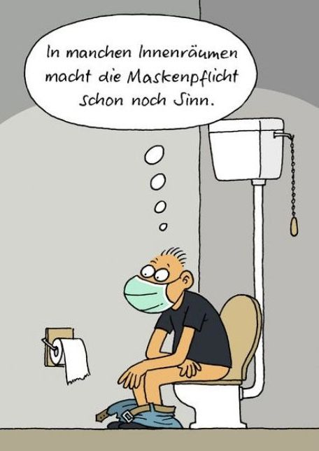

About
Let’s face it. At some point in life, every human being — from tourists and hikers to CEOs and janitors — urgently needs the same thing:
A toilet.
And preferably one that is nearby, clean, and not hidden behind three locked doors and a suspicious “staff only” sign.
That’s where FindAToilet.at comes in.
FindAToilet.at is a community-powered map of public toilets across Austria (and hopefully beyond). The idea is simple:
- Anyone can search for a toilet nearby
- Anyone can add a toilet they discover
- And everything on the platform is completely free
No subscriptions. No paywalls. No complicated apps. Just toilets.
The goal is simple: no one should have to panic-walk through a city desperately scanning café windows again.
A Community Effort
FindAToilet.at works because people contribute. You can find them here.
If you discover a toilet in a park, train station, mall, restaurant, or somewhere unexpectedly glorious — you can add it to the map so the next desperate traveler benefits from your discovery.
Think of it as Wikipedia… but for public bathrooms.
Your contribution might genuinely save someone’s day.
Your Privacy
We keep things simple.
The only information stored by the website is:
- your email address
- your username
This is only used to identify contributors and keep the platform running smoothly.
We are not interested in tracking your browsing habits, selling your data, or judging your bathroom choices.
Why This Exists
FindAToilet.at is a side project created by Ola, a random dude living in Graz, Austria.
The project started partly out of boredom, partly out of curiosity, and mostly as a perfect excuse to wander around Austria exploring new places — all in the name of public infrastructure research.
Thanks to Fechi and Irma for thier contributions.
The Long-Term Mission
The dream is simple:
Create the most useful, community-driven toilet map in Europe.
Because when nature calls, Google Maps is surprisingly unhelpful.
Final Thought
Life is unpredictable.
But finding a toilet shouldn’t be.
Contact
Message the admin here